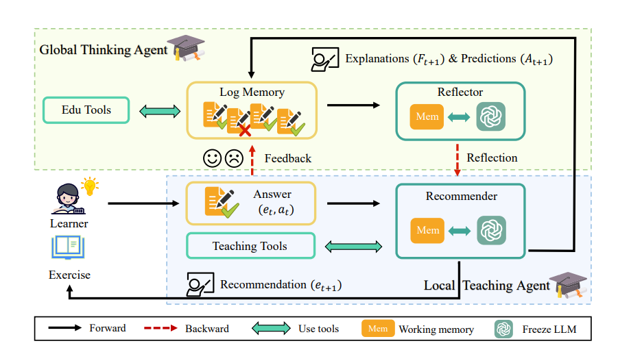

GenAL: Generative Agent for Adaptive Learning

写在前面：
简单来说，它的核心思想是：把“推荐题目”这件事变成两个智能体（Agent）之间的配合。一个负责“宏观思考”（了解学生整体情况），另一个负责“微观教学”（具体挑哪道题）。而且，它不像以前的推荐系统只看题目 ID，它是真的去读题目的文本内容，理解题意。
第一步：宏观把脉 —— 全局思考智能体 (GTA)
在推荐新题目之前，系统首先要搞清楚“这个学生现在是什么水平？”。
- 看病历 (Log Memory)：系统会读取学生过去的答题记录 ℋt，不仅看对错，还要看之前做过的题目的文本内容。
- 做化验 (Educational Tools)：使用传统的知识追踪模型 (如 DKT) 来计算学生对各个知识点的掌握概率（比如“函数”掌握度 60%，“几何”掌握度 80%）[cite: 110, 112]。
- 写诊断书 (Reflector)：这是关键。LLM（大模型）会结合上面的答题记录和掌握概率，生成一份学生画像 (Lt)。
- 画像里包含：学生的能力评估、学习偏好（比如喜欢抽象题还是应用题）。 *同时，它会反思上一轮推荐得好不好，生成一个新的推荐策略 (Rt)（比如：“学生基础不牢，下一题应该降低难度，复习前置知识”）。
第二步：缩小范围 —— 教学工具 (Teaching Tools)
现在有了策略，但题库里有成千上万道题，不能瞎选。这就需要 Local Teaching Agent (LTA) 里的工具来帮忙。
- 查地图 (Knowledge Graph)：利用层级知识图谱 (G)。
- 圈范围：根据当前要学的知识点，找出它自己以及它的直接前驱节点（即学这个知识点之前必须会的那些基础）。
- 定候选集：系统只把属于这些知识点的题目拿出来，形成一个候选练习集 (St)。这就大大缩小了搜索范围，避免大模型产生幻觉或跑题。
第三步：精准决策 —— 推荐器 (Recommender)
这是最终做决定的环节。
- 输入信息：推荐器（也是一个 LLM）接收两个东西：
- 来自第一步的推荐策略 (Rt)（“要降低难度”）。
- 来自第二步的候选练习集 (St) [cite: 169]。
- 预测下一题 (et + 1)：LLM 结合策略，从候选集里挑出最合适的一道题 [cite: 172]。
- 给出理由与预测 (Ft + 1, At + 1)：
- 这步很有意思，LLM 不光甩出一道题，还得解释为什么选这道题（Reasoning），并且预测学生能不能做对。这为下一步的“自我反思”留下了依据 [cite: 175]。
第四步：闭环反馈
学生做完题后，真实结果会和 LLM 的预测结果（At + 1）进行对比。如果 LLM 预测学生会做对，结果学生做错了，GTA（第一步那个智能体）就会在下一轮更新策略：“我高估了他，即使是基础题他也做错了，需要更基础的练习”。
📝 举个栗子：小明的“一次函数”学习之旅
假设现在 小明 正在学习初中数学的 “一次函数 (y = kx + b)”。
1. 初始状态 (GTA 工作): * 记录： 小明刚做完一道关于“斜率 k”的题，做错了。 * 工具分析： 知识追踪模型显示，他对“斜率”的掌握度只有 30%，对“坐标系”掌握度 80%。 * GTA (大模型) 思考： “小明虽然懂坐标系，但对斜率的概念很模糊。现在的策略 Rt 应该是：暂停新课，回退一步，先巩固斜率的几何定义。”
2. 筛选题目 (Teaching Tools 工作): * 目标： 巩固“斜率”。 * 知识图谱： 查到“斜率”的前置知识是“两点间距离”和“坐标点”。 * 候选集 St： 系统从题库里捞出了 50 道相关的题。
3. 最终推荐 (Recommender 工作): * 输入： 策略是“巩固定义，不要太难”，候选集有 50 道题。 * 大模型选择： 既然不能太难，它排除了那些“给定图像求解析式”的复杂题，选中了一道文字题 et + 1： > 题目：已知点 A(1, 2) 和点 B(3, 4)，请计算直线 AB 的斜率。 * 大模型解释 (Ft + 1): “推荐这道题是因为它是斜率的最基本计算，直接应用公式，没有复杂的变形，适合当前基础薄弱的小明。” * 预测 (At + 1): “预测他能做对，因为这是基础计算。”
4. 结果反馈: * 实际情况： 小明做对了。 * 下一轮循环： GTA 看到“预测正确，小明做对了”，于是更新策略：“基础已巩固，下一轮可以尝试稍微难一点的题目，比如结合截距 b 的考察。”
总结
GenAL 相比传统推荐系统，最大的亮点在于它像个真人老师： 1. 它读得懂题（利用 LLM 的语义理解能力）[cite: 14, 26]。 2. 它有教学逻辑（先看前置知识，再定难度）。 3. 它会反思（每次推荐都要写理由，预测不对就自我修正）。
📚 GenAL: 基于生成式智能体的自适应学习框架
一、 当前教育推荐系统存在的问题 🚧
论文指出，尽管自适应学习（Adaptive Learning）研究广泛，但现有模型主要依赖于对学习者和练习题的简单 ID 索引，导致以下三个核心问题：
| 问题点 | 详细描述 |
|---|---|
| 信息利用率不足 | 传统模型（如基于序列或强化学习的模型）无法有效利用练习题的文本内容等丰富的语义信息，导致对题目理解肤浅，推荐缺乏深度。 |
| 泛化性差，难以适应扩展 | 模型需要针对不同的数据集或不断扩张的题库进行重新训练。这使其难以适应在线教育场景中资源快速更新和增长的需求。 |
| 稀疏环境下的不稳定 | 基于训练的强化学习（RL）推荐范式，在学生学习记录稀疏或数据量较小时，其推荐性能往往不稳定且难以保证效果。 |
二、 本文的解决思路与核心方案 💡
本文提出的 GenAL 框架旨在通过引入 大型语言模型 (LLM)，模仿人类教师的认知与教学过程，从而实现语义驱动、可泛化的自适应学习推荐。
| 解决思路 | 具体机制 | 目标 |
|---|---|---|
| 分层决策架构 | 采用双智能体（Agent）结构，将复杂的教学任务分解： 1. 全局思考智能体 (GTA)：制定宏观教学策略 Rt。 2. 局部教学智能体 (LTA)：执行微观推荐决策 et + 1。 |
实现教学策略与题目选择的有效解耦和协同。 |
| 语义驱动推荐 | LTA 中的推荐器（Recommender）是一个 LLM，它直接读取题目内容的文本信息，并根据 GTA 的策略进行语义级别的推理和选择。 | 克服传统模型只看 ID 的局限性，实现基于内容的理解推荐。 |
| 引入外部知识 | LTA 中包含教学工具（Teaching Tools），用于接入教育领域的先验知识。 | 解决 LLM 在特定教育领域的知识短板，避免“幻觉”。 |
三、 该思路可能遇到的挑战 ⚔️
| 挑战点 | 描述 |
|---|---|
| LLM 的领域幻觉 | LLM 在通用领域强大，但在专业的教育知识点上可能缺乏精确性，容易产生不准确的**“幻觉”决策或不专业理由**。 |
| 巨大的搜索空间 | 如果让 LLM 直接从整个题库中挑选 et + 1，其计算和时间成本不可接受，效率极低。 |
| 缺乏教学闭环与自我修正 | 缺乏将 LLM 的推荐决策与学生的真实反馈进行对比、反思和迭代修正的机制，难以保证教学策略的长期稳定性和有效性。 |
四、 本文克服挑战的手段 🛠️
GenAL 框架通过设计精巧的工具和反思机制，系统性地解决了上述挑战：
| 挑战 | 克服手段 | 实现细节 |
|---|---|---|
| 领域幻觉与搜索空间 | 知识图谱指导与搜索空间限制 | 教学工具（Teaching Tools）：利用分层知识图谱 G 来限制推荐范围。候选集 St 只包括当前目标知识点及其直接前驱节点相关的练习题。这既缩小了搜索空间，又用结构化知识校准了 LLM。 |
| 缺乏教学闭环 | 反思与预测机制 | 推荐器（Recommender）：强制要求 LLM 在推荐 et + 1 的同时，生成推荐理由 (Ft + 1) 和对学生作答的预测 (At + 1)。 全局思考智能体（GTA）：负责将 At + 1 与学生实际作答进行对比，通过**反思器（Reflector）生成新的反思总结 Lt，并更新下一轮的教学策略 Rt + 1，形成“观察-反思-规划-行动”**的闭环。 |
五、 实验论证优越性 🏆
本文通过在实际教育数据集上的对比实验和消融实验，全面论证了 GenAL 框架的优越性：
推荐有效性 (Recommendation Effectiveness)：
- 结果： GenAL 在评估自适应推荐效率的指标（如通过更少的问题达成目标知识掌握度）上，显著优于传统的序列推荐模型和基于 RL 的推荐模型。
- 论证： 证明了其策略制定和题目选择更高效，能加速学生的学习路径。
知识追踪准确性 (Knowledge Tracing Accuracy)：
- 指标： 使用 AUC 和 ACC 等指标评估模型对学生下一个问题作答对错的预测能力。
- 结果： GenAL 达到了最高的预测准确率，表明其能更精确地理解学生的实时学习状态。
消融实验 (Ablation Study)：
- 通过移除关键组件（如知识图谱、反思机制），实验结果显示性能大幅下降。
- 论证： 证明了知识图谱是克服 LLM 幻觉的关键，而反思机制则是保障 GenAL 长期、稳定、高效推荐的根本保障。